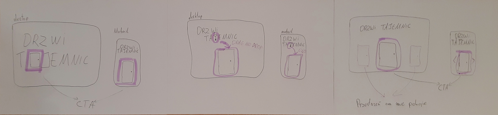

Zaprojektować Landing Page Escape Room'u
Podsumowanie rezultatów:
+50.000 wejść
W ciągu pierwszego roku działalności. Mimo braku budżetu marketingowego.
Współczynnik Odrzuceń 12.5%
Nieszablonowy design nie sprawił problemów większości.
Pozytywne Wspomnienie
Kilku graczy wspomniało Mistrzowi Gry że podobała im się strona internetowa.
Wyzwania biznesowe
Po rozmowach z przedsiębiorcą wyłoniłem najważniejsze założenia wokół których powinien być projektowany landing page.
Nie mogę umieszczać zdjęć z pokoju
Ze względu na spoilery zdjęcia pokoju nie mogą znaleźć się na stronie.
Niski budżet
Rozpoczynający działalność przedsiębiorca nie dysponował dużym budżetem.
Regularny Gracz
Targetem są regularni gracze którzy widzieli już wiele stron innych stron, często zbudowanych na większym budżecie.
Jak sprawić by regularni gracze dali szasne nowej firmie?
Świetną baza danych na temat zachowań konsumentów okazał się portal LockMe gdzie można prześledzić profil każdego użytkownika, sprawdzając jakie pokoje odwiedza oraz jakie oceny wystawia.
Wnioski do których doszedłem śledząc zachowanie ponad 10 użytkowników:
Najważniejszy jest klimat
Słowo klimat pojawia się bardzo często w opiniach, dodatkowo najważniejszą ocenę na tym portalu można wystawić właśnie za klimat.
Trudność zagadek jest bardzo subiektywna
W przeciwieństwie do klimatu, użytkownicy wystawiają skrajnie różne oceny poziomu trudności pokoju. Próbując zachęcić użytkownika poziomem trudności jesteśmy skazani na rozczarowanie wielu graczy.
Cena nie jest ważna
Ceny oferowane od DrzwiTajemnic mieszczą się w średniej cen konkurencji, dlatego szybko porzuciłem ten trop do szukania przewagi.
Lokalizacja nie ma znaczenia
Pokój z największą ilością opinii jest oddalony ponad 10km od centum. Na tej podstawie wyciągnąłem wniosek że lokalizacja nie jest ważna dla regularnych graczy.
Landing Page musi przekonać graczy że pokoje tej firmy mają klimat.
Zrezygnowałem z typowych wzorów na strone główną. Priorytetem jest to by strona oddawała klimat pokoju.Burza mózgu:
Po wymyśleniu kilku koncepcji, odrzuciłem wszystkie które z powodów technologicznych lub biznesnowych nie mogłby być zrealizowane. W ten sposób otrzymałem jeden projekt:
Po zatwierdzeniu projektu przez klienta wziąłem się za stworzenie prototypu bez grafik by przetestować pomysł na znajomych
Obserwując zachowanie moich użytkowników zauważyłem że pierwszym ruchem jest najechanie na drzwi, a po ich otworzeniu próba kliknięcia. Badanie uzałem za udane.
Końcowy projekt można zobaczyć tutaj:
Zobacz produkt
Moja UX'owa praca obejmuje tylko Landing Page.
Nie zgadzam się z decyzjami designowymi wewnątrz strony.